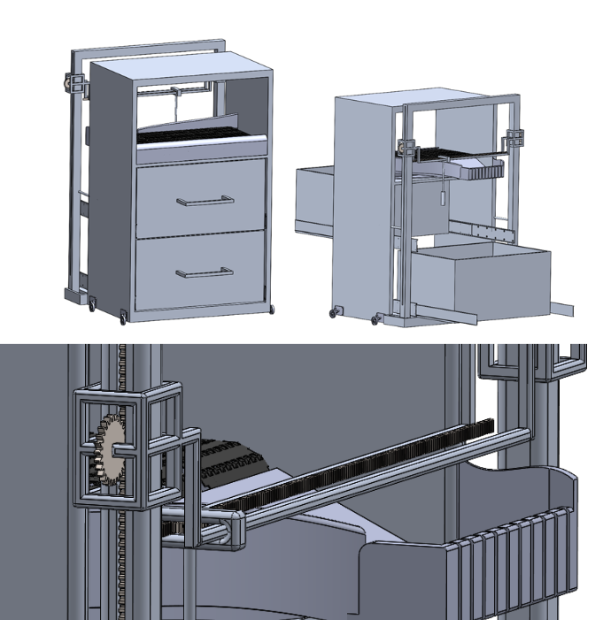

Raytheon (RTX) – Patriot Missile Team Intern May 2025 - August 2025

RoboJackets Battle Bots 3 lb team member.

My ME 2110 Project.

Developing a social media application for automotive enthusiasts.

Opted to design an autosorting toolbox.
Hytech racing Controls / Suspension team member.

Culturally inpsired creative design project.

Python Project connecting enhancing livestream capabilities.

Currently working on development of website for GT startup.